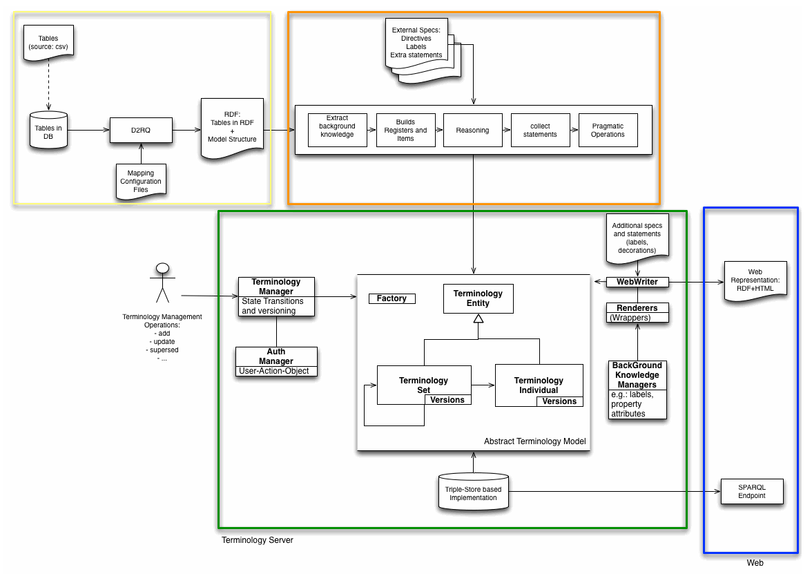
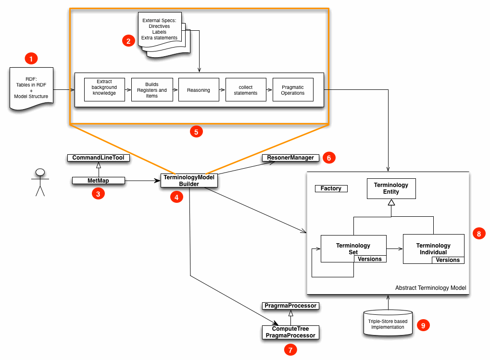
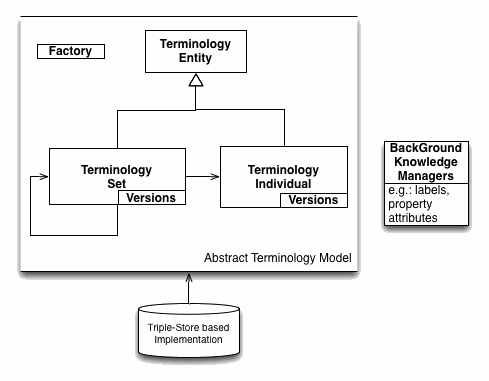
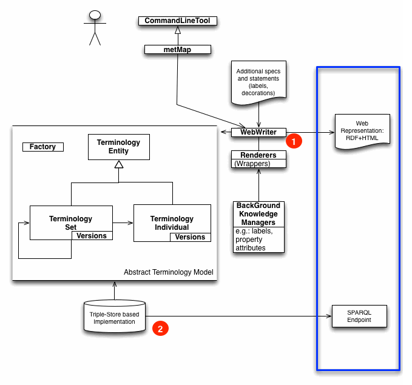
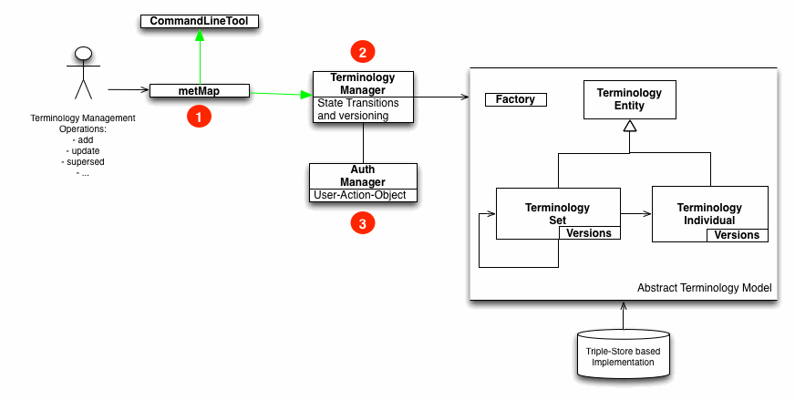

The Terminology Manager is composed of an ad hoc developed software to build and manage the terminology model (properly called the Terminology Manager), and of a few third-parties software used to complement its functionalities.
An overview of the Terminology Manager structure and related
processes if presented in the following figure.

The yellow and orange boxes indicate the steps that are used to
build a Terminology Model. The yellow box indicates the steps
performed by a third party software, while the orange box
indicates the step that are executed by the Terminology Manager
itself. The green box indicates the core components of the
Terminology Manager software and the services it provides, while
the blue box indicates the publication capabilities of the overall
system.
The system is in a large part modular, and not all systems need to
be present if only a subset of functionalities is desired.

If the source code tables are not already in RDF, but in another
suitable format, for instance cvs (1), the system relies on the
external tool d2rq (3) to provide a
transformation of the code tables in RDF. D2RQ at its time
requires tables to be present in a relational database (2).
The user needs to provide a mapping file (4) that specifies how
the tables can be translated in an RDF that contains both the
information proper of the code table, and additional (meta)
information on how tables should be expressed on the web (e.g. the
nesting structure of sub-registers, if sub-tables are present).
If codes are properly represented in the relational database (e.g.
code are keys), d2rq itself is able to generate a default mapping,
that can be then edited for further specification.
The utility rdf-dump in d2rq is then used to generate a RDF (5)
that represent code tables plus meta information on the
terminology structure.
For details on D2RQ we refer to the d2rq
documentation. An HOW-TO guide to realize a mapping is provided in
the HOW-TO make a
mapping guide and details on the meta language used to
represent meta information is provided in the Terminology
Manager mapping constructs document. Extensive examples are
provided in the main distribution.
The RDF representation of codes, enriched via meta-information to
guide their arrangement in a terminology structure, is processed
the Terminology Manager to build a Terminology Model. The
execution of this process is controlled through the command line
utility metMap, and can be tuned via parameters and options
provided in configuration files (ref. HOW-TO make a mapping
and Guide To
Configuration Files.
The terminology model is in effect a set of classes whose
information is persisted on disk (more detail in the next
paragraph).
The execution of metMap results in the set of actions detailed
illustrated in the following diagram (5), that also depicts the
relevant part of the system involved.
Input to the mapping process is an RDF representation of code
tables, enriched by meta statements on how to build such codes in
a terminology model (1).
The process is controlled by the script metMap (3) that
essentially manage the configuration and operation of the
TerminologyModelBuilder (4). Note how metMap is also responsible
for extracting information for extra configuration files that can
be used to tune the mapping process (2).
The TerminologyModel builder executes a set of steps (5) that
result in the contruction of an object model (8) representing the
Terminology Model, that is persisted on a triplestore (9).
In executing the steps detailed in (5), the TerminologyModel
accesses the functionalities of other sub-systems, such as the
ReasonerManager (6) or the PragmaProcessors (in the above figure
"ComputeTreePragmaProcessor" is shown as an example) (7).
The detail of the steps in (5) is the following (order sensitive):
The current implementation of the TerminologyModelBuilder is
under refactoring (possibility of different sources other than
(1)).
The TerminologyModel is a simple (abstract) model for which an
implementation that persists information on a triplestore is
provided. The TerminologyModel is briefly sketched below:

Both codes (Individuals in the model) and registers (Sets in the
model) are subclasses of a more generic (Terminology) entity.
As entities, they have common metadata (e.g. the owner), a set of
statements that regards the entity itself, and support for
versions.
A Set is richer in that it can contain other entities, either
codes, or other sets (sub-registers).
An individual presents only minor differences from an entity, that
relate to its specific role in pragmatic operations.
All statements that are pertaining to an entity (individual or
set) are relative to a version. A version is in essence a key of
an entity-specific associative array that contains, for each
entity, the set of statements valid for each version.
Metadata on versions allow to establish which version is
subsequent to which, first and last versions are computed
run-time.
It should be noted that, within the system, versions follow the
convention "string"+number (e.g.: v1). Parts of the system may
still rely on this convention, that was originally introduced to
allow for parallel versioning branches (a feature useful for
concurrent un-coordinated updates of resources).
All objects are created through a Factory that keeps tracks of the
root registers. Some knowledge (e.g. labels, annotations) that are
accessory to the information content defined in the register are
managed separately through Knowledge Manager objects. It should be
notes that within the system anything that is not a mere attribute
is identified by a URI. Hence even the owner of a code is
identified by a URI, that can be associated to different
labels in different languages.
All information is persisted in a triplestore in this
implementation. With the exception of a very few attributes
functional to the construction of the Terminology Model, all
information is represented in triple-store based graph and there
is no need for explicit synchronization of persisted information
and the object model.
It should be noted that, given the implemented approach to
versioning, most of the information is monotonous: statements and
properties of a triplestore are never cancelled, only added
(though which one are relative to a given version vary). In
current information non-monotonous information are the ones
pertaining to ownership of the entity (who can operate on it).
The publication of the Terminology Model as "web accessible"
registers is performed through the execution of the command line
instruction metMap (the same command used to generate a
Terminology Model in the first instance). Details on how to
operate this command are provided in HOW-TO
publish a terminology model. As shown in the following
figure, metMap drives the functioning of the WebWriter object (1),
having the same configuration gathering and control role it had
for TerminologyModelBuilder.
WebWriter essentially navigates the Terminology (form its roots:
note that the terminology is a tree!) and coherently generates a
set of files generated through Renderers, that provide a
representation (e.g. html/en. html/it, rdf....) for the entity
data. Renderers have also access to background information, for
instance to search for properties labels in specific languages.
Internally a few filters can be configured in static files as to
control which "relations" are proper of each export. It is also
possible to decide which property some more generic property of
the framework maps to (e.g.: whether to serialize versions via
dc:version in RDF).
metMap only adds files (never deletes), in conformance with the
monotonicity of the published information. For debugging, things
can be set so that the system will stop if an attempt to overwrite
an existing file is done.
It is also possible to configure a Fuseki or Joseki server to
directly open a sparql endpoint on the content of the triplestore
(2). More detail can be found on the Fuseki
documentation.

Operations to update or alter the content of the register are
performed via the metOp command, who's operation is described in
the HOW-TO
operate on a terminology model document.
The implementaton of metMap is illustrated in the following figure:

metMap (1) is a command line utility that gather parameters and
guide the execution of TerminologyManager (note that we refer here
to the specific module, rather than the overall system as in other
parts of the documentation). TerminologyManager is responsible to
translate higher order commands (add, delete, update...) to the
corresponding alteration of the Terminology Model.
For instance a delete http://test.org/a operation will be
decomposed in instructions such as:
Note that no direct results are visible on the published
registries until the next metMap is run to generate new web
resources (alternative implementations are possible). In
principle, altered information is visibile in the altered
endpoint, however synchronization issues may be present, and it is
good practice to restart the endpoint after an update (unless the
possibility of synchronization issues can be ruled out).
The Teminology Manager also performs two important tasks:
For a combination of user (U), operation (O) and target (T), it asks an AuthManager module whether this operation is allowed. AuthManager returns true if it knows that U-O-T is legal, otherwise recursively return the answer for U-O-T', where T' is the register containing T. The system hence consider the most specific known authorization instructions stated.
Another important role of the Terminology Manager is to compute
the transition from a code-state-operation to the next state. This
is configurable in static files.